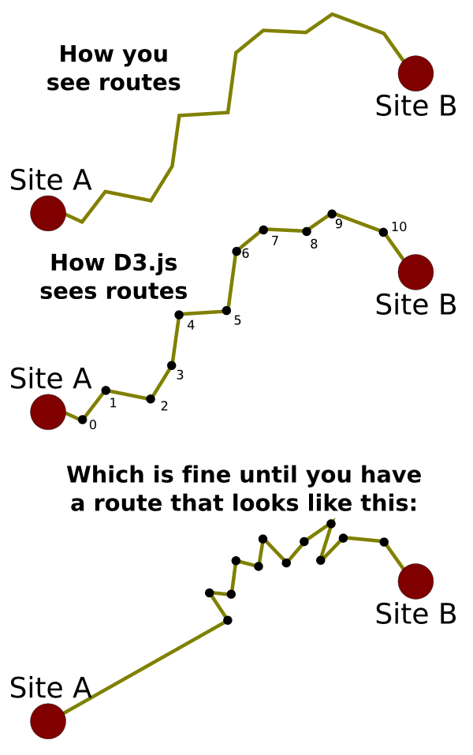
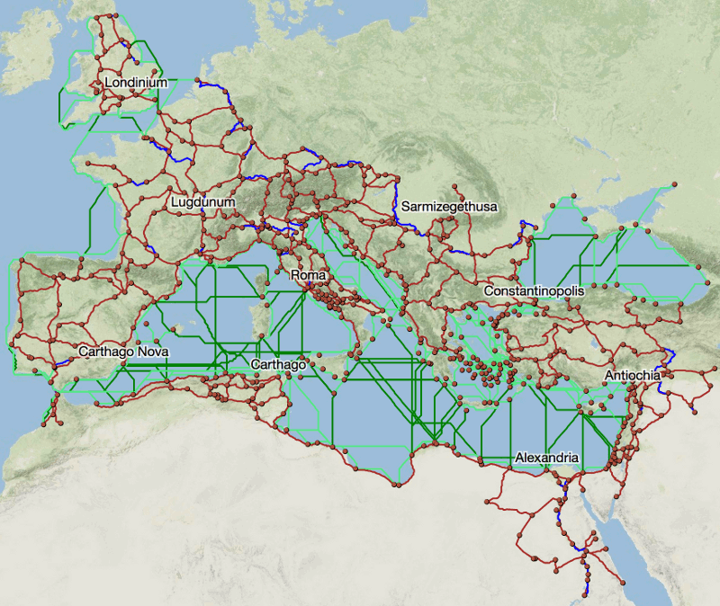
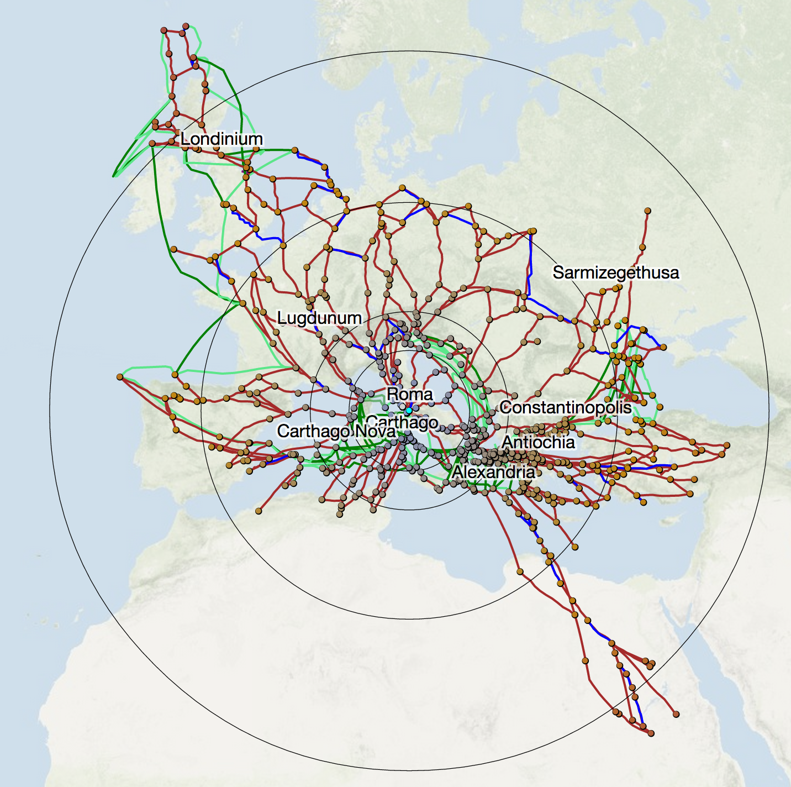
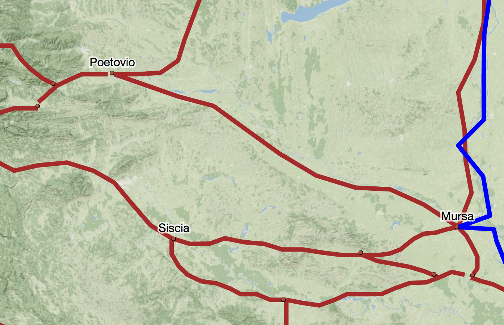
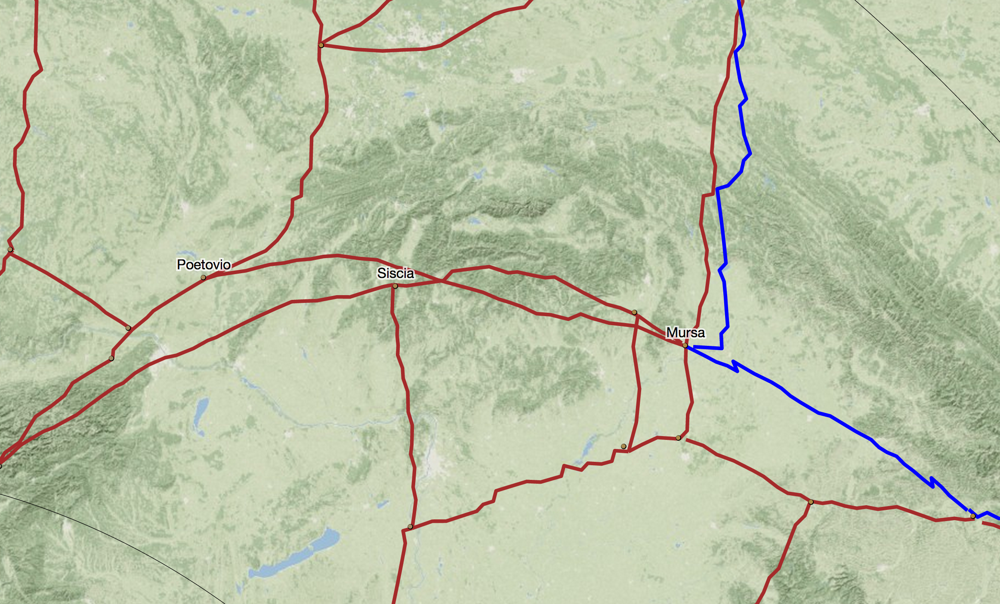
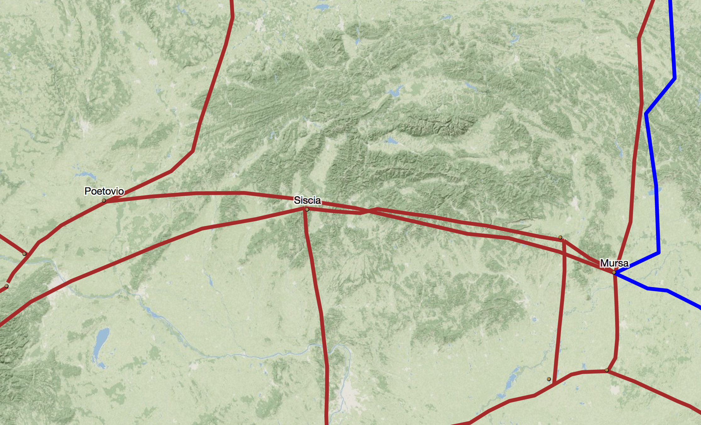

ORBIS is nearly two years old, and the ongoing update to the site has me once again in conversation with a cartographers, geographers, designers, and digital humanists. A new response I get, when describing the growing feature list of ORBIS v2, is some variation of "What do people use this for?" The fact that ORBIS still generates decent traffic* seems even more remarkable than its appearance in gaming forums, college essays and high school courses. The ultimate answer to the question is that most people play with it, running routes and contrasting the results with their own experience or intuition of travel in the regions where they run their routes. But, as has been noted in earlier essays about the project, ORBIS was built for the purpose of displaying dynamic distance cartograms, and the Google Maps interface was just an affordance that came along from developing that functionality. And so one of my major goals in updating ORBIS is to dramatically improve the cartogram functionality, as well as provide mechanisms to improve the use and understanding of what is a very abstract concept. This is as much a design challenge as a coding challenge, especially when it comes to properly distorting the routes that make up the network along with the sites. This post will get into quite a bit of technical detail as far as how that was done, and also touch on the growing integration of graphics and geography in the web mapping world.

First, a quick definition of a dynamic distance cartogram. The image above is a distortion of the geography of the ORBIS network to reflect the amount of time it would take to travel from Rome to the various other 700+ sites in the ORBIS network. This kind of distortion is available from any site in ORBIS v2 by clicking on the site and selecting Cartogram. The terrain map has faded because what we are no longer looking at traditional geographic information, instead we're seeing the combination of geographic position of sites relative to Rome (in that their angle from Rome is maintained) but with the distance from Rome set to represent the relative distance as it would take to navigate to that site along the network. So, Britannia is still up and to the left, while Egypt is still down and to the right, but the individual sites, if you measured their distance from Rome, correspond to the cost it would take to get there. In this case, the cost is time, but that cost may be the expense to ship grain or passengers, or the total length of the routes (which, as you'd expect, produces much less distortion).
Distorting the position of sites is easy, given that each site is a single coordinate (or point, in geogrphic information systems-speak). You just need to calculate the angle from Rome and change the distance while maintaining that angle. But one of the critiques that Scott Weingart made in his review of ORBIS was that the original cartogram does not distort routes, which provide much of the context necessary for understanding a cartogram. As you can see in the example above, the new cartogram handles routes along with sites, and does so with good performance (at least in Chrome and Safari--I've given up trying to build things for Firefox's horrible SVG performance). This is accomplished in D3 by selecting the path elements that represent our routes and calculating new "d" attributes for them (the "d" attribute determines how a path is drawn in SVG) like so:
d3.selectAll("path.links").each(function(d) {
var xposition = -1; var yposition = -1; var lineLength = d.coordinates.length - 1; var cartoRamp = d3.scale.linear().range([d.properties.source["cost"][0],d.properties.target["cost"][0]]).domain([0, lineLength]); cartoPath = d3.svg.line() .x(function(p) {return lineInterpolatorX(p)}) .y(function(p) {return lineInterpolatorY(p)});
function lineInterpolatorX (incomingRoute) { xposition++;return findx(cartoRamp(xposition),incomingRoute[0],incomingRoute[1],centerX,centerY) }
function lineInterpolatorY (incomingRoute) { yposition++;return findy(cartoRamp(yposition),incomingRoute[0],incomingRoute[1],centerX,centerY) } d.cartoD = cartoPath(d.coordinates); })
Each path element is selected and instantiates its own d3.svg.line() constructor to create the new, distorted line. This constructor operates on a set of x/y coordinates, but in the case of the lines we're working with, those x/y coordinates cannot be passed as simple values but instead need to be interpolated based on the distortion of the system that we're representing with the cartogram. A simple polyline, like the kind we're using for the routes in ORBIS, is a collection of coordinate pairs, and each coordinate pair needs to be positions relative to the distortion of the two sites that the line connects. So, we build a linear ramp using d3.scale.linear() from the cost to reach Site A to the cost to reach Site B and map it to the number of points that makes up the line. We use this linear ramp to determine the interpolated cost at each point in the polyline to create a distortion of the route that distorts the points near Site A more like Site A and the points on the route near Site B more like Site B and the points in the middle as some mix based on the order they appear in the line.
But this method has a problem. It assumes that the points that make up the polyline are equidistant. As a result, if you have a route that is significantly more complex on one end or the other (such as switchbacks or other changes in course), then it will have more points to represent that complexity which may not map to actual length of the route. 
This happens with the ORBIS route data because the line simplification it uses to create lightweight geodata comes from a GIS focus on resolution and maintaining details given a particular scale, which can result in polygons and polylines maintaining uneven complexity across their surface. There are two ways to resolve this. The first would be to factor the actual length of the line at the point we're distorting and with a cost ramp that was mapped to the length of the route instead of the number of points in the route, then we would see proper distortion. The other way to solve this is to normalize the displayed routes by pairing D3's projection() function with the built-in SVG getPointAtLength function to normalize the routes. I chose this direction because it would also reduce the number of vertices, overall, in the routes and should improve performance. The code to do that:
simplifiedGeoms = [];
d3.selectAll("path.routes").each(function(d,i) { var segLength = d3.select(this).node().getTotalLength(); var simplifiedObject = {coordinates: [], type:"LineString", id: d.id, properties: d.properties}; for (x=0;x<=1;x+=.1) { var segPoint = d3.select(this).node().getPointAtLength(segLength * x); var segPointProjected = projection.invert([segPoint.x,segPoint.y]) simplifiedObject.coordinates.push([segPointProjected[0],segPointProjected[1]]); } simplifiedGeoms.push(simplifiedObject); })
routeG.selectAll(".routes") .data(simplifiedGeoms) .attr("d", path)
Notice that for this to work, we need to have already created the graphical objects that represent the geographic data for the routes. This requires us to project the data and draw it in the DOM. Once we have SVG paths that represent each route, we can take advantage of the built-in SVG functionality to segment the lines equidistantly relying not on their geographic length but on their graphical length. D3's handy projection.invert() function allows us to create the projected coordinates from the graphical coordinates returned by getPointAtLength. The underlying data used to determine route cost and shape is unchanged, and even with dramatic simplification the appearance of the line maintains most of its integrity. 
This gif cycles between no simplification of the routes, a simplification to 10 equidistant points along the polyline, and a simplification to 4 equidistant points along the polyline.
The result of simplifying the routes in this manner is not some massive change. As I noted earlier, there weren't any routes troublesome enough to create significant distortion. Compare the initial cartogram at the beginning of this post with the cartogram drawn with lines that have been normalized in this manner and you'll be hard-pressed to spot the differences:

One of the places where you can see a correction in route distortion happens with the routes to Mursa (now Osijek, Croatia) from Siscia (Sisak, Croatia) and from Poetovio (now Ptuj, Slovenia). You can may think that the path from Poetovio to Mursa is less complex than the path from Siscia to Mursa, but the former consists of 56 points, while the later consists of 37 (in two segments).

In both cases, the points are spread unevenly across the polylines. When we distort the network with the center at Rome (with the same settings as with all the cartograms shown in this post) it seems like the path from Poetovio, rather than converging with the route from Siscia as it approaches Mursa (as we would expect) instead crosses and changes position relative to the center, implying that the road from Siscia to Mursa slows down and then speeds up as it approaches Mursa.

This kind of behavior is also visible in the doglegs evident on the Danube to the right of Mursa. We can see these are artifacts of the polyline segmentation when we compare the distortion with the normalized routes:

While the change is minor, and it was my intuition before effecting this normalization that it would be, in the aggregate this kind of error is visually jarring and interrupts an attempt to understand what is already a very abstract spatial representation. What intrigued me more than the technical details was that the first half of this code (the cartogram itself) needed to happen in the browser, since the transformation is dynamic and interactive and subject to the same variety of permutations available for calculating routes. But the second half (the line simplification) could have happened on the backend to produce a static data file. Instead, rather than being some kind of pre-processing technique, the negligible cost to recalculate the simplified routes affords the opportunity to provide level of detail controls that allow the reader to determine, say, the number of points per line if they want. More than that, I found it quicker to address this through dealing with the graphical structures rather than the geodata structures, which suprised me. While we live in an age of readily accessible and robust tools and libraries for geospatial manipulation, we also have simple and effective methods for manipulating graphical data. I'm sure much of my motivation for addressing this with D3 and SVG rather than PostGIS (or Shapely, for you Pythonistas out there) is because I use D3 a lot these days, but the capacity to do line simplification like this (or raster calculations with canvas or other traditional backend GIS) in the browser is revolutionary. What's more exciting than the growing capability to do this kind of thing in the browser is the necessity when delivering dynamic, interactive content like this.
* 3000 visits in the last week, which is small potatoes to a big Internet site, but rather remarkable for a scholarly site that hasn't added any new features for a couple years